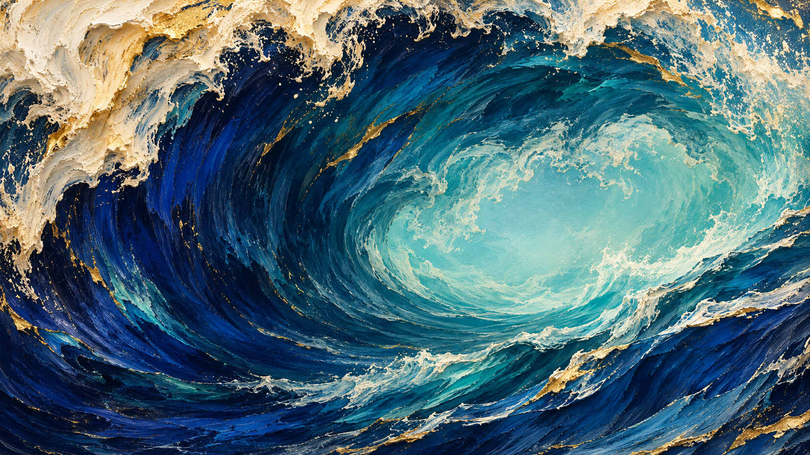
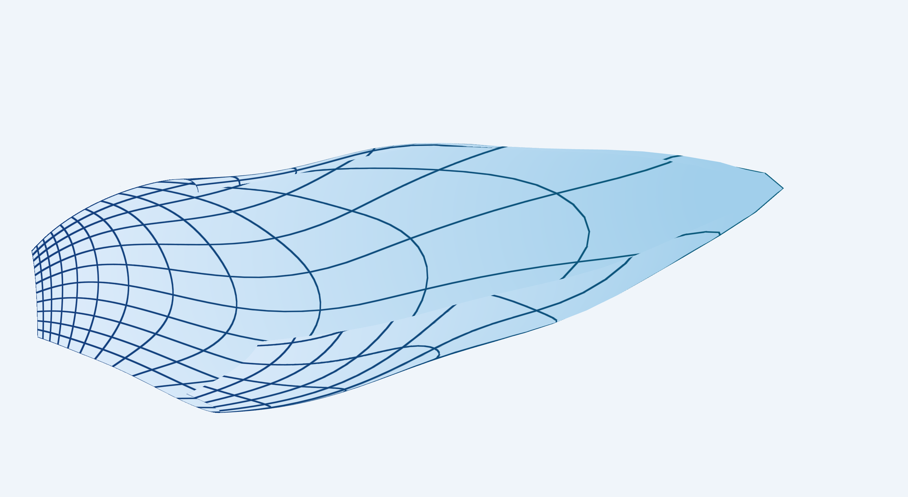
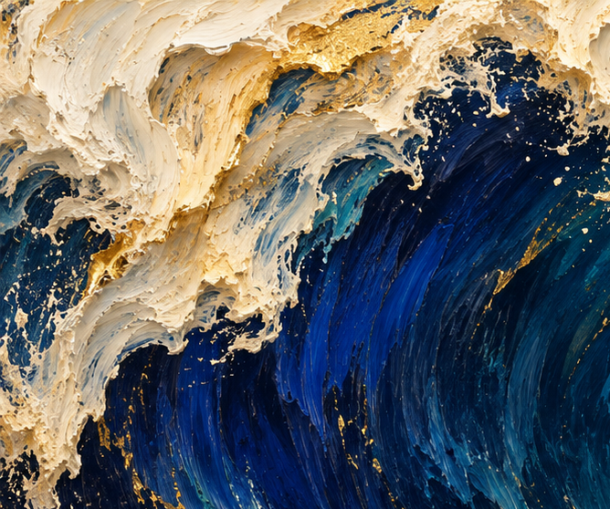
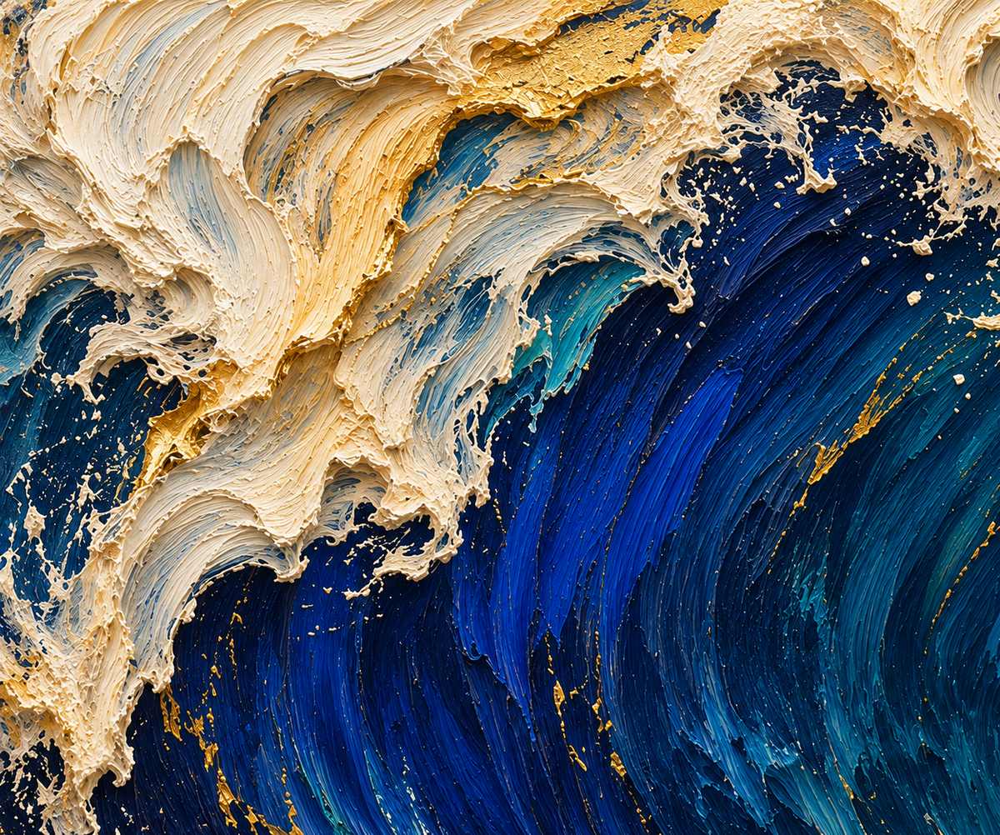

Make the mesh. Bind the wings and tail to seven bones.
Codex + Three.js
Write the tunnel shader, animate the gates and test the flight path.
Suno · WebCodecs · FFmpeg
Set 17 music cues. Encode 1,590 frames and add stereo sound.
RIPTIDE /Set geometry02 / 06
How does a flat wave get depth?
The shader pushes parts of a painted grid away from the camera. Each point keeps its original texture coordinates.

Flat textureCrosshair at the eye, UV (0.669, 0.506).

The same grid from outsideCutaway showing every fifth grid line.
Push the painted eye farther away205 × 127 cells
depth = 9.8 / (0.110 + r1.38)
r is the aspect-corrected distance from the eye. At r = 0.10 the depth is 64.6 scene units. At r = 0.60 it is 16.2.
Through the film cameraFinished frame, same lens · 17.17 s
What moves before the wave?
Five gates of three blocks open first. Then 22 pages swing on their hinges. Two ink walls close into the slit.
RIPTIDE /Flight rig03 / 06
Why did the bird fly backward?
The early bird looked tail-first. Three points on the mesh told me which way its beak actually faced.
ImageGenPainted referenceTripo H3.1Wing detail · 47,432 tris totalBlender · seven-bone rigBody, paired shoulders, outer wings and tail branches. Gold dots are the actual joint pivots.
Sample the path at t ± 9 ms to get its tangent. Point the beak along it. Roll around that axis and tuck the wings independently.
The rig makes its own printsRender four wing poses to an offscreen texture. Stamp those silhouettes onto the hinged pages.14.78 s · the ink fissureCheck the deformed mesh frame by frame. Minimum measured clearance at the fissure was 0.348 scene units.
RIPTIDE /Texture restoration04 / 06
Why did the first 4K look soft?
The frame was 3840 × 2160, but each painting was 1672 × 941. Close to the lens, one soft gold stroke filled hundreds of pixels.
Six overlapping wave regions
6 + 4 + 2
Six wave, four rock and two sky repaints. Each ImageGen pass starts from its matching crop of the original.
Restore the base
Run Real-ESRGAN x4 on the lossless originals and the new detail paintings.
Register the marks
Match SIFT features, then use optical flow to pull the gold back onto the original edge.
Blend and remap
Feather the overlaps and keep the relief in surface UVs. The result is three 6688 × 3764 texture maps.
RIPTIDE /ImageGen prompt05 / 06
What did I actually ask ImageGen?
This is the top-left corner of the wave. I gave ImageGen the crop as a reference, then used a registration script built with Codex to place its new brushwork.

Reference crop668 × 558 px

ImageGen repaintBefore registrationRegistered resultCut from the final map
From the actual wave prompt
“Use the entire attached crop as the exact registration template.”
“crisp bristle splits following each existing stroke, thin broken knife ridges on the gold”
The borders register the tile with its neighbours. Inside each brushstroke, the prompt asks for bristle splits and broken gold ridges.
939matched inliers
0.31 pxmedian residual flow
For this tile, SIFT matched the landmarks. Optical flow measured the remaining local adjustment in source pixels.
Try the same shot
Run this in the scene’s browser console for frame 1030. The repo includes the references, full prompts, crop windows and registration code.
seek(1030 / 60)
RIPTIDE /Timing & rendering06 / 06
One clock for flight and sound
I marked 56 beats and picked 17 action cues from the Suno score. The camera, wings and set all read one time value.
Studio score waveform127 BPM · 26.5 s
0 sTicks are beats. Gold marks the three cues below.26.5 s
10.53 sStamp the pages14.78 sTuck the wings20.95 sPeel the wave
Make every frame reproducible
seek(t) reconstructs the pose, camera and set. Chrome averages four samples over a 72° shutter to keep the cuts legible during fast flybys.
26.5 s × 60 fps × 4 samples = 6,360 renders
WebCodecs → FFmpeg
Encode H.264 in the browser and mux 48 kHz stereo AAC in FFmpeg. That gives a 1,590-frame 4K loop.
Check the encoded movie
Decode every frame and check the timestamps and loop seam. All 17 audio cues align with the source to the sample.